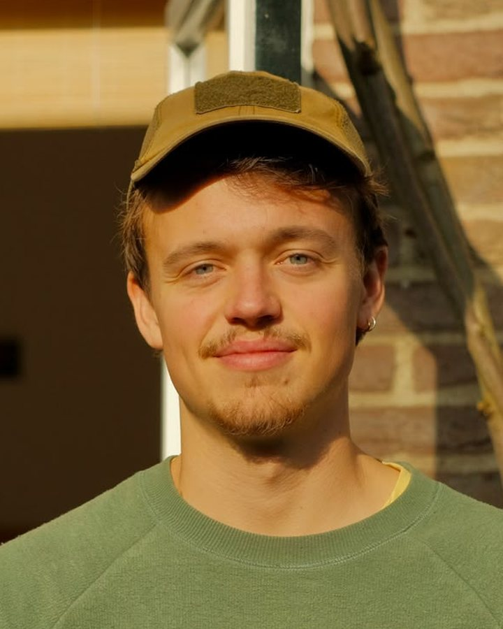
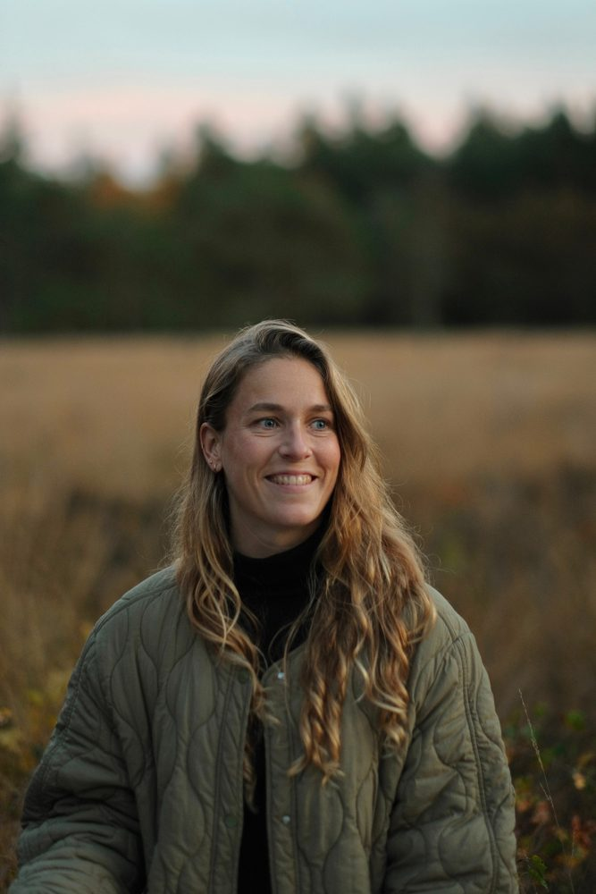
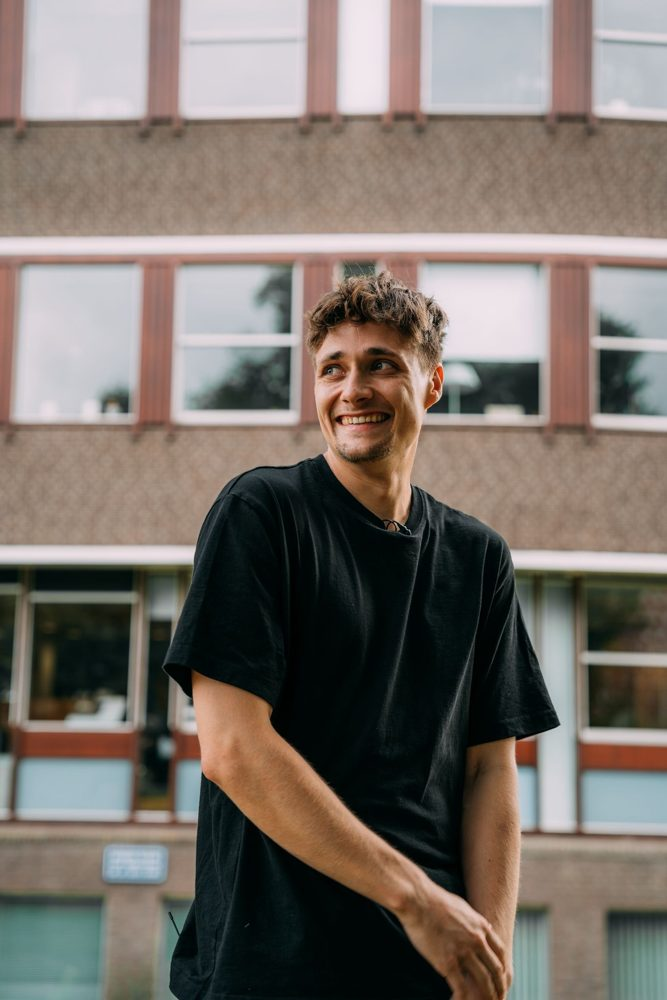
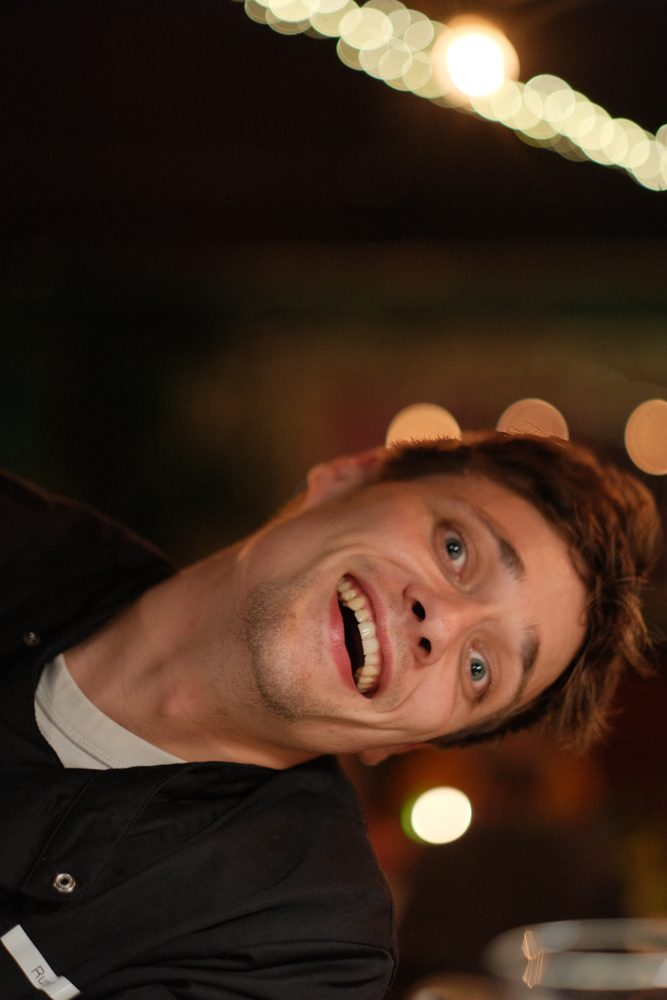

Community Kitchen Amersfoort is een grassroots buurtdiner, georganiseerd voor- en door stadsgenoten. Elke editie serveren wij een hoogwaardig vegetarisch diner, gemaakt met geredde streekproducten.
Wij geloven dat een goede maaltijd de makkelijkste manier is om mensen samen te brengen.
Verbinding staat centraal bij Community Kitchen Amersfoort. Elk diner creëren we een setting waarin je op een laagdrempelige manier nieuwe mensen leert kennen. Daarnaast werken we elke editie samen met andere lokale organisaties. Door een beroep te doen op elkaars krachten en kwaliteiten creëren we een brede impact en een sterker lokaal netwerk.
Verder werken we elke editie samen met een geweldig team aan vrijwilligers. Soms zijn het directe vrienden, soms mensen die het concept tof vinden en er gewoon graag bij willen zijn. De een is professioneel kok, de ander kookt vooral thuis. In de praktijk maakt het niet uit, we verwelkomen iedereen! Elk jaar organiseren we meermaals aparte, kleinere diners voor iedereen die actief meehelpt. Zo maken we het extra gezellig voor ons team.
En misschien nog wel het leukste: we reizen door de stad. Omdat we geen vaste plek hebben, gaan we telkens op bezoek bij locaties door heel Amersfoort. Daardoor leren we veel verschillende mensen en kanten van Amersfoort kennen. En kunnen we die weer met elkaar verbinden.

Na mijn studie heb ik Community Kitchen Amersfoort opgericht omdat ik een nieuwe ontmoetingsplek wilde creëren. Door op een laagdrempelige wijze gemeenschap te combineren met goed, eerlijk voedsel ontstaat een bijzonder concept waar we ontzettend trots op zijn.

Door mijn werk in de specialty koffie, ben ik ook met een andere blik naar ons dagelijkse voedsel gaan kijken. Achter elk ingrediënt en gerecht zit een verhaal. Met deze events hoop ik mensen sfeervol samen te brengen én kritisch na te laten denken over hun relatie met de (Nederlandse) voedselketen.


Koken is voor mij altijd een prachtige manier geweest om mijn vrienden vreugde en geluk te brengen. Ik wil graag meer mensen bereiken met eten en mijn ervaringen delen met nieuwe zielen, wanneer ik maar kan.
Een laagdrempelig diner, betaalbaar en informeel, waar ontmoeten het doel is, als gast of vrijwilliger.
Lekker vegetarisch eten van gered, lokaal en seizoensgebonden producten.
Samenwerken met toffe initiatieven en organisaties om te laten zien wat Amersfoort te bieden heeft.
Amersfoortse kombucha, gebrouwen van gered fruit.
Bekijk website ↗Biologische tuinders die overschot delen voor onze menu's.
Bekijk website ↗Een creatieve plek die een editie ontving.
Bekijk website ↗Een bijzondere plek waar we een editie kookten.
Bekijk website ↗Schuif aan bij een diner, word vrijwilliger of werk met ons samen aan een editie.